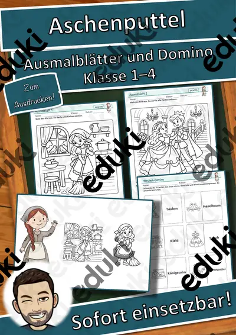
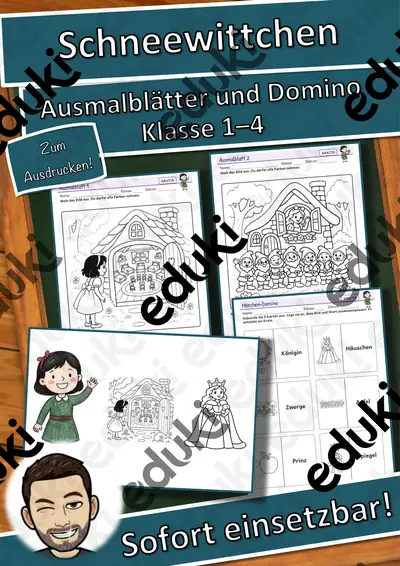
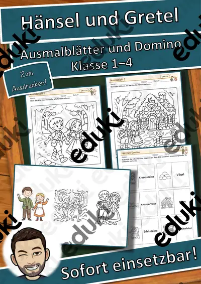
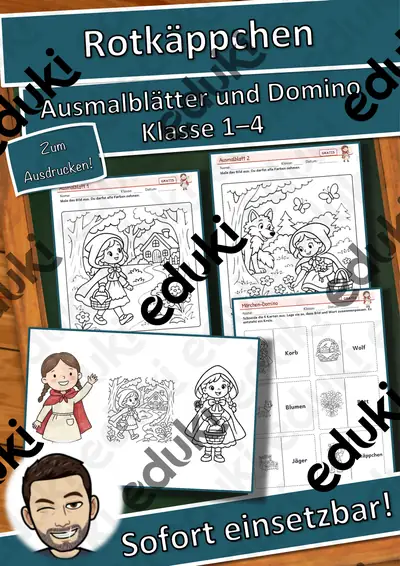
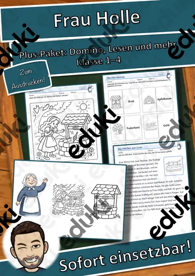
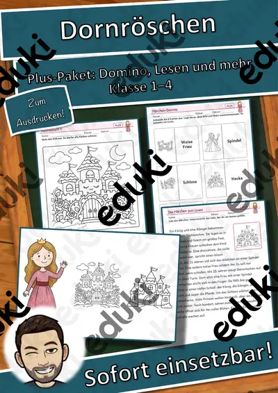

Lesespaziergang Nikolausabend: Stiefel, Sterne, Plätzchenduft – 8 Stationen in 3 Lesestufen mit Hörfassung (Klasse 1–2, DaZ)
Lesen in Bewegung – und am Ende steht das Lösungswort: Der Lesespaziergang „Nikolausabend“ erzählt die Geschichte „Stiefel, Sterne, Plätzchenduft“ in 8 Stationen, die im Klassenzimmer, Flur oder Schulhof verteilt aufgehängt werden. Die Kinder laufen mit ihrem Laufzettel von Station zu Station, lesen den Text, suchen an der Bilderwand das passende Bild und tragen dessen Buchstaben ein. Stimmen alle Zuordnungen, ergibt sich ein Lösungswort mit 8 Buchstaben – Selbstkontrolle ohne Lehrkraft.
Dreifach differenziert – alle Kinder laufen denselben Spaziergang:
- ★ kurze Sätze in großer Schrift (2–3 Sätze je Station), Ankreuz-Aufgaben, Hörfassung als Hilfe
- ★★ kleine Geschichte (4–5 Sätze je Station), Richtig-oder-falsch-Aufgaben
- ★★★ ausführlicher Text mit Details und Sachinformationen, W-Fragen zum Schreiben in ganzen Sätzen
Eine Geschichte aus der Adventszeit: Es ist Sonntag im Advent. Auf dem Tisch steht der Adventskranz. Papa zündet die erste Kerze an. Emil und Ida schauen in die Flamme. Es duftet nach Tanne. …Inhalt (22 Seiten + Deckblatt):
- Übersicht für Kinder und Lehrkräfte: So geht der Lesespaziergang, Aufbau in 5 Minuten, Stufen-Erklärung
- 24 Stationskarten (8 Stationen × 3 Stufen) im A5-Format zum Ausschneiden und Aufhängen
- 8 Bild-Buchstaben-Karten (Bilderwand) → Lösungswort mit 8 Buchstaben
- 3 Laufzettel (★ / ★★ / ★★★) mit Lösungswort-Kästchen und je 8 Verständnisaufgaben
- „Für Schnelle“: Satzpuzzle, Wörtersuche an den Stationen, Reimwörter, Schreib-weiter-Aufgabe
- 8 Bild-Wort-Karten mit Artikelfarbe (der Adventskranz, das Plätzchen, der Stiefel, der Apfel, der Nikolaus, die Mandarine, die Schule, das Geschenk) – zum Vorentlasten, Zuordnen, als Wortschatzwand
- Hörfassung per QR-Code: die ganze Geschichte Station für Station vorgelesen (für Leseanfänger, DaZ, Hörstation)
- Lösungen mit Auswertungshinweisen und eine Seite für Lehrkräfte (didaktischer Kern, Stufen zuweisen, 6 Varianten)Einsatz: Deutsch Klasse 1–2 (Leseverstehen, Lesen in Bewegung), Religion/Ethik, DaZ, Förderunterricht, Vertretungsstunde, Wochenplan, Projekttag. Dauer 20–30 Minuten plus Auswertung. Ausdrucken, ausschneiden, aufhängen – fertig.
Teil der Reihe „Lesespaziergang“ (3 Einheiten: Laternenzeit, Tiere im Winter, Nikolausabend) – im Paket günstiger.
Geschichte, Aufgaben und Layout eigene Erstellung. Illustrationen KI-erzeugt und bearbeitet, keine Fotos, keine realen Personen, keine Marken. Hörfassung per Sprachsynthese. Texte mit KI-Unterstützung erstellt und geprüft.
Viel Freude beim Lesen, Laufen und Lösen wünscht Snice! :)
Ähnliche Materialien

Lesespaziergang Tiere im Winter: Pit, der Igel, sucht ein Bett – 8 Stationen in 3 Lesestufen mit Hörfassung (Klasse 1–2, DaZ)

Lesespaziergang Laternenzeit: Linas Laterne – 8 Stationen in 3 Lesestufen mit Hörfassung (Klasse 1–2, DaZ)

Märchen-Werkstatt: Aschenputtel – Ausmalblätter und Domino, Klasse 1–4 (kostenlos)

Märchen-Werkstatt: Schneewittchen – Ausmalblätter und Domino, Klasse 1–4 (kostenlos)

Märchen-Werkstatt: Hänsel und Gretel – Ausmalblätter und Domino, Klasse 1–4 (kostenlos)

Märchen-Werkstatt: Rotkäppchen – Ausmalblätter und Domino, Klasse 1–4 (kostenlos)

Märchen-Werkstatt: Frau Holle – Plus-Paket mit Domino, Lesen und Kleben, Lesetext, Klasse 1–4
